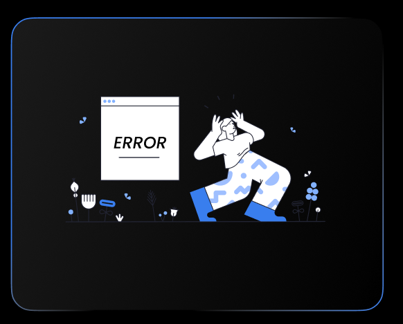

Hmmm, we can't access your camera
Let’s fix that so you can use Virtual Try-On. Take the steps below, and reload this page to try again.
Let’s fix that so you can use Virtual Try-On. Take the steps below, and reload this page to try again.